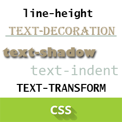
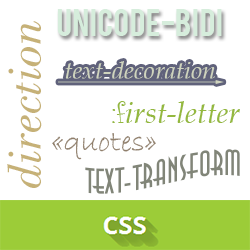

font - универсальное свойство, которое позволяет одновременно задать несколько характеристик шрифта и текста.
Его синтаксис font: [font-style||font-variant||font-weight] font-size [line-height] font-family | inherit
font-style - определяет начертание шрифта: обычное, курсивное или наклонное. Когда для текста установлено курсивное или наклонное начертание, браузер обращается к системе для поиска подходящего шрифта. Если заданный шрифт не найден, браузер использует специальный алгоритм для имитации нужного вида текста. Результат и качество при этом могут получиться неудовлетворительными, особенно при печати документа.
Его синтаксис font-style: normal | italic | oblique | inherit